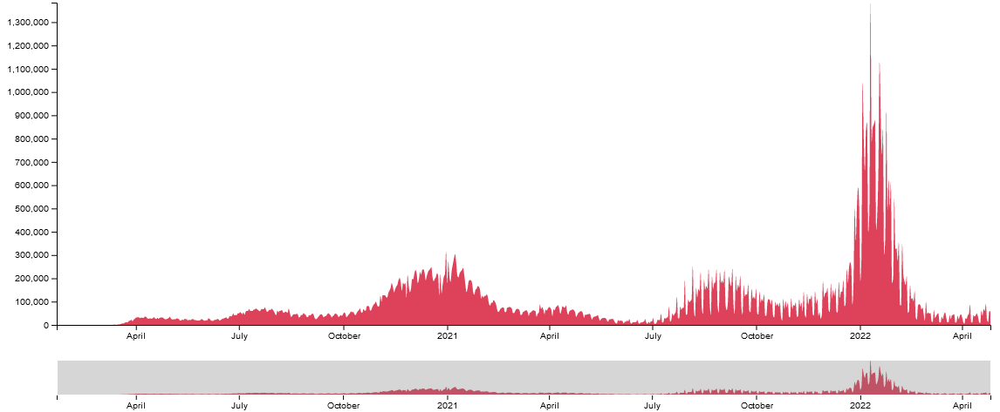
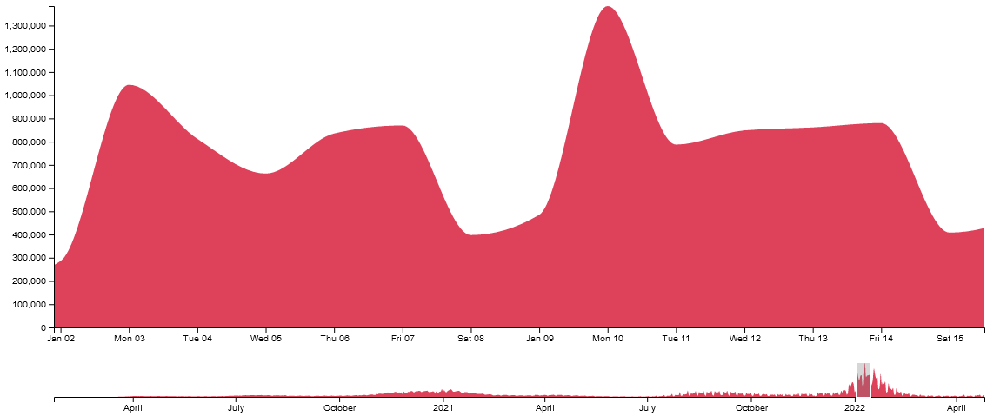
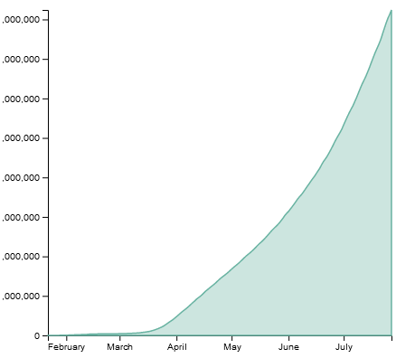
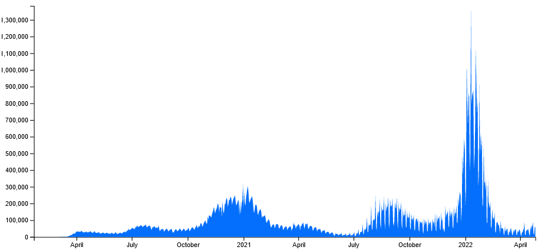

Documentation
Working with COVID-19 data is interesting
because it's currently an ongoing event. Data is being released in this area everyday. I think a lot of people can find it interesting to look at a
visualized graph of the daily cases and point out certain events or dates and compare it to what the state of the pandemic was at that time.
The design process started with understanding what types of attributes from the data I would be using. The question I wanted to ask was "Do certain times of the year affect when COVID-19 cases are higher in the United States?". Since
I wanted to understand the cases over a period of time, so I needed a dataset that contained entries as dates
with the daily number of cases for that day. I also wanted narrow down the type of cases I'm tracking to
only be in the United States. It was important that I find a dataset that was up to date so I would be able to view the bigger picture when it came to trends on daily cases. There were quite a few datasets on
Kaggle that I found that stopped being updated within the first year of the pandemic. In the end, I decided
to go with the Our World In Data: Covid-19 Data - which is updated daily. The data contains every country's daily case
number since the beginning of the pandemic (1/22/20 - Present). Since I wanted to just view the daily cases
per day in the US, I had to filter the csv file for only the US data before being able to start visualizing it with D3.
It was my plan to visualize data tracked over a period of time, so I decided to go with an area chart. With
there being over 800 rows of data, I didn't think a bar chart would look visually pleasing and a line chart would be too
empty for viewing only the cases in the US as a whole. The data being visualized is showing how the values
developed over time which fit the need for an area chart.
Visualizing a rather large dataset over a long period of time became difficult to size things in a way that
made them easy to explain and theorize. Looking at D3's documentation and examples, I found a really
interesting Zoomable Area Chart concept. In the end, it worked really well to be able to zoom in and drag to select a
chunk of data to analyze.
For the chart color, I wanted a color that would be recognizable and be associated with the topic of the
data. COVID-19 is generally shown in the media and in marketing as red to most likely indicate danger. I chose a similar
color, #de425b - which helps it stand out boldly against the white background.
Findings
"Do certain times of the year affect when COVID-19 cases are higher in the United States?"
Finding #1
Viewing the data in its entirety shows us a couple interesting things. For one, we've seen the largest spikes of COVID-19 in the United States during the winter seasons (November - February). This may be related to when the normal flu season happens in the colder months of the year.
We can also see more spikes starting around the end of the summer seasons in July. This could be a correlation to people getting back from vacations and/or school being back in session for the fall semester.

Finding #2
Zooming in a bit in the data, we can see these dips and peaks each week all over the data. These dips are usually during the weekends which may be explained by some testing centers not being open on the weekends or shorter hours. People showing symptoms may also not be seeking out treatment during the weekend.
The most cases during a week usually fall during a Monday or Friday. As theorized above, this could be because of less testing centers open on weekends or people waiting through the weekend until the weekday starts to get treatment.

Versions
v1.0
Created a basic area chart with a COVID-19 daily case dataset I found on Kaggle. This was more of a proof of concept with trying an area chart. Unfortunately, the dataset only contained data from January 22nd - July 27th. It was also data from the entire world instead of just the United States. This didn't really didn't give me a lot to go off of with the correlations besides that cases were constantly on a rise between those time frames.

v2.0
This version was another area chart with the dataset I ended up using in the finalized version. This dataset gave me a bit more to work with when it came to visualizing the data and being able to see the trends of the daily COVID-19 United States cases. The only downside was besides manually zooming in with your browser, it was very difficult to see the data up close with how large of a time period the entire chart is showing.

v3.0 (Final)
The finalized version is a zoomable area chart which also allows you to brush the timeline and select certain time periods to view.